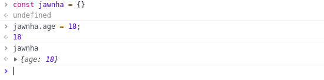
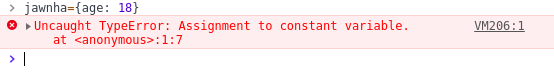

今天面试，面试官提了一个问题，问 const 定义一个对象后是否可以给属性赋值，当时候没有考虑就直接回答不可以了。回去后感觉不对，于是赶紧翻开了阮大神的《ES6 入门》查看了一下，原文是这样说的：
const实际上保证的，并不是变量的值不得改动，而是变量指向的那个内存地址所保存的数据不得改动。对于简单类型的数据（数值、字符串、布尔值），值就保存在变量指向的那个内存地址，因此等同于常量。但对于复合类型的数据（主要是对象和数组），变量指向的内存地址，保存的只是一个指向实际数据的指针，const只能保证这个指针是固定的（即总是指向另一个固定的地址），至于它指向的数据结构是不是可变的，就完全不能控制了。因此，将一个对象声明为常量必须非常小心。
不懂的话再来段代码压压惊！

so…没有报错
再给他赋一个值相同的变量看看！

看到这儿大家应该明白了吧
因为对象是引用类型的，jawnha中保存的仅是对象的指针，这就意味着，const仅保证指针不发生改变，修改对象的属性不会改变对象的指针，所以是被允许的。也就是说const定义的引用类型只要指针不发生改变，其他的不论如何改变都是允许的。